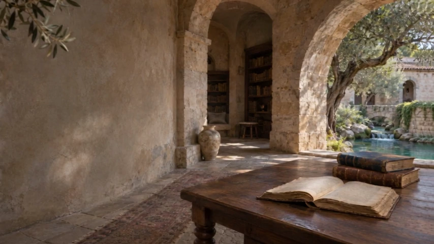

BİR FİKRİN YOLCULUĞU — 01
Fikirleri gerçek hayatta test ediyorum.
DÜŞÜNCEDEN HAYATA
Yolculuk hazırlanıyor…
HER YOLCULUK BİR SORUYLA BAŞLAR.
Şimdi, gerçek hayatta.
Kamera yolculuğu için JavaScript gereklidir. Deneyleri okumaya devam et.